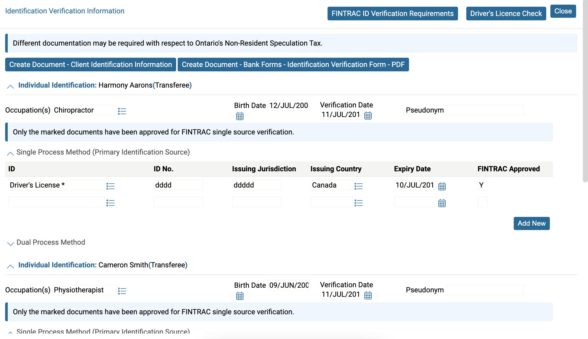
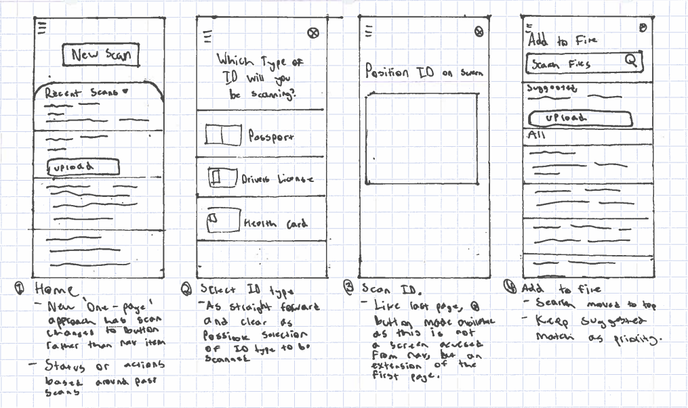
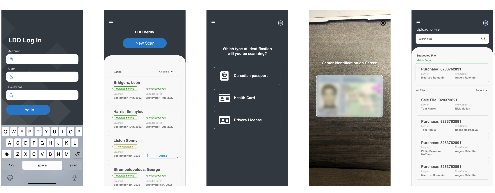

Problem
Long and arduous progress for entering and verifying ID information to complete legal property transfers.
Users
Ontario legal professionals. This applies to lawyers as well as others in the practice of real estate law such as paralegals, legal clerks and legal assistants.
Goal
Make an application with a strong enough user experience that users would opt to use it instead of manually entering the information to a form on the main application.
Result
A clean, straightforward application that is set up for users to effectively verify the identities of those involved in real estate transactions. The platform was also built to seamlessly integrate new features at any point.
Getting started
Overview
RealtiWeb is an application built by Canadian legal software company LDD. The web application's purpose is to assist in the closing of legal transactions across Canada. This includes final documents, property registration, and as relevant to this project: verifying the identity of buyers.
LDD decided to build an application that would operate in conjunction with RealtiWeb to verify the identification pieces of prospective home buyers.
As the lead interface and interaction designer, it was my responsibility to see out how this application would work.
Reviewing the existing Process
- Confusing layout - some steps are necessary while others aren’t with no indication of what exactly are. For lawyers into their careers, this may be a clear route, but to those new to the legal profession, it is overwhelming.
- Too much information to manually enter.
- No clear step by step process defined.
Solution Outline
To bypass this arduous process, an app would be created that would simply scan a piece of ID and import it into the specific file in question.
Designing
Going into the design process for this application, I knew the only way users would opt to download and use a mobile app rather than manually enter the information into the web application is if it were significantly easier than the existing process. What I did not have control over was the steps involved in opening one's phone, downloading the app and opening it, which are extra steps the users would previously not need to take to verify an ID. This means that the user experience of the application would have to be as simple and straightforward as possible to outweigh what is beyond my control.
I drew the following concept to establish the first ideas about how the user process of LDD Verify would flow.
Reviewing the concept
What worked:
The simplicity of some aspects, such as the home page which served one function, or the scanning page which was designed to provide basic instructions without distracting from the camera view on screen proved to be a strength of the concept. Some smaller concepts, like automatically matching the scanned identification to a file also became central to the final usability.
What needed improvement
Navigation throughout the application: Originally, the concept was split into three distinct pages of access. The home screen, which showed a list of recent scans and actions upon that data; the scan screen, and a setting screen. I came to realize that this was not the right approach for a number of reasons. For one, since scanning was the primary function of the app, it should be entrenched into the initial view in a far more clear way, having it on a separate navigation screen would provide several difficulties. For example, though the camera view is the first screen in the scanning process, it isn’t the only, and showing another screen subsequently opens up the opportunity of the user becoming confused. Additionally, the settings screen had no reason to be a primary navigation item as it would be rarely used, a far more apt position would be in a hamburger menu in the top left. This way, the functionality exists without adding unnecessary screens. Finally, though the app at the point of development has only one function, it may down the road grow to include more tools, and dedicating a bottom navigation to just one function would create limitations and new problems preventing growth of the app.
Adding to a file: Though the matched file functionality was a strength of the application from the beginning, users may still need to add manually if the same client has multiple files with the law firm. Therefore, a list with a search function must appear. The original design had this search function underneath the matched file. However, the search field is always at the top of our web applications and the same principle should be applied to the mobile app.
Re-design concept
Full Design
Reflection
LDD Mobile Verify was designed in less than two weeks. Because of this, little research was able to be conducted, and this app's process could best be described as a sprint. Nonetheless, I believe that my process for LDD Mobile Verify made the process of scanning identification items as simple as it possibly could be.

Let's Talk More
I would love to talk about this project a little more with you! Please send me an email and we can set up a chat to really go through what went into this project!